Next: Java InputStream Class Up: Programming Previous: Implementing TreeSet Class Contents
In Java, streams are the sequence of data that are read from the source and written to the destination. An input stream is used to read data from the source. And, an output stream is used to write data to the destination.

For example, in our first Hello World example, we have used System.out to print a string. Here, the System.out is a type of output stream. Depending upon the data a stream holds, it can be classified into:
Byte stream is used to read and write a single byte (8 bits) of data. All byte stream classes are derived from base abstract classes called InputStream and OutputStream.
Character stream is used to read and write a single character of data. All the character stream classes are derived from base abstract classes Reader and Writer.